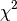

Section author: Gavin Huttley
From cogent import all the components we need
>>> from cogent import LoadSeqs, LoadTree
>>> from cogent.evolve.models import HKY85
>>> from cogent.maths import stats
Get your alignment and tree.
>>> aln = LoadSeqs(filename = "data/long_testseqs.fasta")
>>> t = LoadTree(filename = "data/test.tree")
Create a HKY85 model.
>>> sm = HKY85()
Make the controller object and limit the display precision (to decrease the chance that small differences in estimates cause tests of the documentation to fail).
>>> lf = sm.makeLikelihoodFunction(t, digits=2, space=3)
Set the local clock for humans & Howler Monkey. This method is just a special interface to the more general setParamRules method.
>>> lf.setLocalClock("Human", "HowlerMon")
Get the likelihood function object this object performs the actual likelihood calculation.
>>> lf.setAlignment(aln)
Optimise the function capturing the return optimised lnL, and parameter value vector.
>>> lf.optimise()
View the resulting maximum-likelihood parameter values.
>>> lf.setName("clock")
>>> print lf
clock
=====
kappa
-----
4.10
-----
===========================
edge parent length
---------------------------
Human edge.0 0.04
HowlerMon edge.0 0.04
edge.0 edge.1 0.04
Mouse edge.1 0.28
edge.1 root 0.02
NineBande root 0.09
DogFaced root 0.11
---------------------------
==============
motif mprobs
--------------
T 0.23
C 0.19
A 0.37
G 0.21
--------------
We extract the log-likelihood and number of free parameters for later use.
>>> null_lnL = lf.getLogLikelihood()
>>> null_nfp = lf.getNumFreeParams()
Clear the local clock constraint, freeing up the branch lengths.
>>> lf.setParamRule('length', is_independent=True)
Run the optimiser capturing the return optimised lnL, and parameter value vector.
>>> lf.optimise()
View the resulting maximum-likelihood parameter values.
>>> lf.setName("non clock")
>>> print lf
non clock
=====
kappa
-----
4.10
-----
===========================
edge parent length
---------------------------
Human edge.0 0.03
HowlerMon edge.0 0.04
edge.0 edge.1 0.04
Mouse edge.1 0.28
edge.1 root 0.02
NineBande root 0.09
DogFaced root 0.11
---------------------------
==============
motif mprobs
--------------
T 0.23
C 0.19
A 0.37
G 0.21
--------------
These two lnL’s are now used to calculate the likelihood ratio statistic it’s degrees-of-freedom and the probability of observing the LR.
>>> LR = 2 * (lf.getLogLikelihood() - null_lnL)
>>> df = lf.getNumFreeParams() - null_nfp
>>> P = stats.chisqprob(LR, df)
Print this and look up a  with number of edges - 1 degrees of freedom.
>>> print "Likelihood ratio statistic = ", LR
Likelihood ratio statistic = 2.7...
>>> print "degrees-of-freedom = ", df
degrees-of-freedom = 1
>>> print "probability = ", P
probability = 0.09...